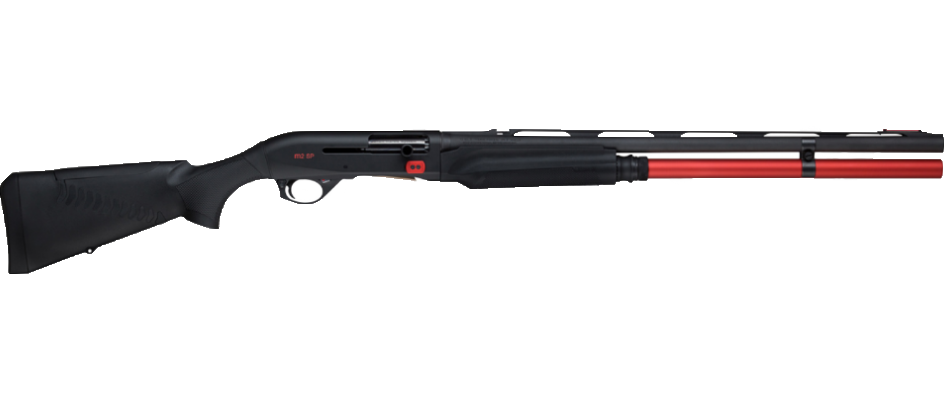

Про IPSC:
Міжнародна конфедерація практичної стрільби (IPSC або МКПС) була створена з метою сприяння, підтримки, поліпшення і просування практичної стрільби, як спорту, захисту її принципів і регулювання діяльністю у всьому світі з метою вироблення безпечних навичок володиння та використання вогнепальної зброї законослухняними громадянами.
Розвиток мистецтва стрільби можна простежити ще з середньовіччя, але до 19-го століття стрільба не була розвинута як спорт.
За 200 років з того часу, стрільці зруртувалися разом під флагами різних організацій, на місцевому, національному та світовому рівнях, задля практикування та вдосконалення стрільби.
Правила змагань в стилі практичної стрільби IPSC, були розроблені в Південній Каліфорнії наприкінці 1950-х років та швидко поширилися по всьому світу зокрема до Австралії, Центральної і Південної Америки, Європи і Південної Африки.
Оскільки цей вид спорту викликав великий інтерес та розповсюдження в суспільстві, учасники намагалися створити більш структуроване середовище для його існування.
У травні 1976 року в Колумбії (штат Міссурі), відбулася перша Міжнародна Пістолетна Конференція, де брали участь спортсмени з усього світу. На ній обговорювались структура, організація, майбутнє практичної стрільби та була створена Конституція і Конфедерація.
Точність, потужність і швидкість були визнані типовими елементами практичної стрільби IPSC. Латинський девіз Diligentia, Vis, Celeritas (DVC), що означає точність, потужність і швидкість, був визнаний для відображення цих збалансованих елементів. На Конференції були прийняті процедури та правила проведення змагань, а також стандарти безпечного поводження зі зброєю.
Наприкінці Колумбійської конференції офіційно сформувалася Міжнародна Конфедерація практичної стрільби. Полковник Джефф Купер, який виступив головою Конференції, був обраний першим президентом IPSC.
Практична стрільба являє собою нову, захоплюючу форму спортивної стрільби та була створена для сприяння, підтримки, а також популяризації цього виду стрільби.
Класи зброї на змаганнях з практичної стрільби з рушниці:
| Назва класу | Коротко про клас | Типова зброя |
|---|---|---|
| СТАНДАРТНИЙ КЛАС | Використовуються полуавтоматчні рушниці заводського виробництва, які доступлі для широкого загалу з мінимальними доробками |  |
| СТАНДАРТНИЙ КЛАС РУЧНОГО ПЕРЕЗАРЯДЖАННЯ | В класі використовуються рушниці з рухомою цівкою, котрі перезаряджаються за допомогою фізичної сили. Вимоги до класу, крим вищезазначеного, як в стандартному класі. |  |
| ВІДКРИТИЙ КЛАС | Максимально тюнінговані рушниці в виді програми: Використовуються полуавтоматичні рушниці Можно користуватися від’ємними коробчатими та поворотними або множинними трубчатими магазинами Дозволені різноманітні оптичні та електронні прицільні засоби Компенсатори, порти в стволах, полум’ягасники Та інше. |  |
| МОДИФІКОВАНИЙ КЛАС | В класі використовуються полуавтоматичні рушниці з трубчатими магазинами, котрі можно модифікувати: Можна використовувати пристрої та модифікації, які зменшують подброс ствола та компенсують віддічу Дозволено використовувати оптичні та електронні приціли Зброя може бути серійною заводською, її прототипом або виготовлену індивідуально Та інше |  |